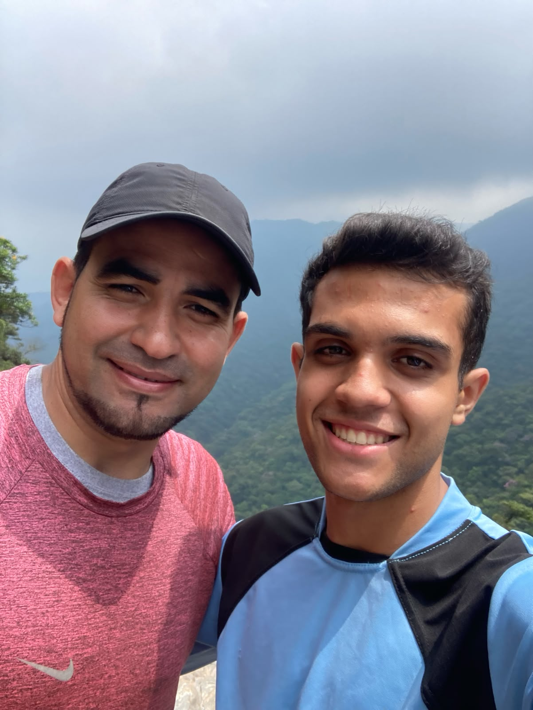
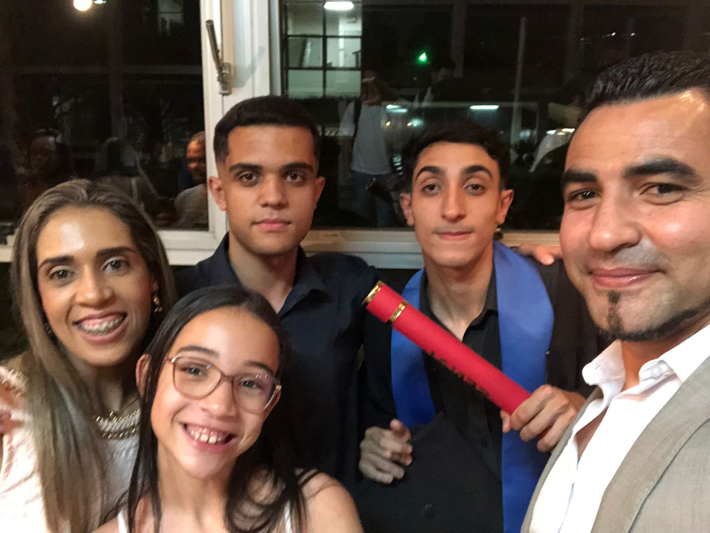
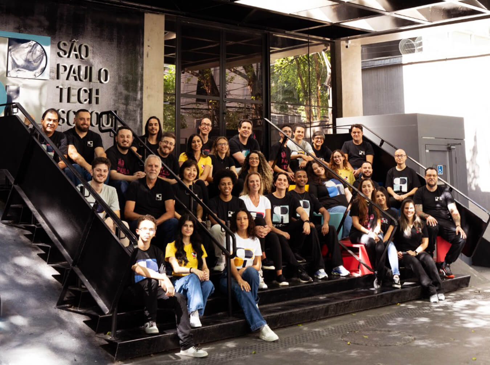

Sobre mim
Oi, eu sou o Vinicius.
Estudante de Análise e Desenvolvimento de Sistemas na SP Tech School, tecladista desde criança e criador do Musify.
Muito alegre
Otimista
Amo resolver problemas

Estudante de Análise e Desenvolvimento de Sistemas na SP Tech School, tecladista desde criança e criador do Musify.
Tudo começou quando eu tinha 7 ou 8 anos. Havia um teclado em casa e eu comecei a aprender. Venho de uma família cristã e meu pai é músico, o que contribuiu muito para esse começo.
Na música encontrei uma forma de me expressar, criar e planejar. Isso me trouxe conhecimentos e experiências, como tocar em bandas, entender o meu espaço e a minha função dentro do grupo e sentir a música.
Alguns momentos que marcaram a minha relação com a música, do primeiro teclado até hoje.
Comecei a aprender com um teclado que tinha em casa, com o incentivo da minha família e do meu pai, que é músico.
Na música encontrei uma forma de me expressar, de criar e de planejar.
Aprendi a entender o meu espaço e a minha função dentro do grupo, e a sentir a música.
[Confirme e conte um momento marcante de quando você tocou em casamentos.]
Tive que abrir mão de tocar e, atualmente, principalmente escuto música. Transformei essa relação em um projeto: o Musify.
Nada disso seria possível sozinho. Obrigado a quem esteve comigo nessa caminhada.

[Nome]. Me apresentou à música e me incentivou desde o começo. Com ele aprendi a tocar junto.

[Nomes]. A minha base em tudo, pelo apoio e por acreditarem em mim.

[Nomes]. De um professor de música levo uma frase: "Se você não tentou 1 milhão de vezes, você não pode falar que não consegue."
[Nomes]. Pela troca, pelas ideias e pelo apoio na música e na faculdade.